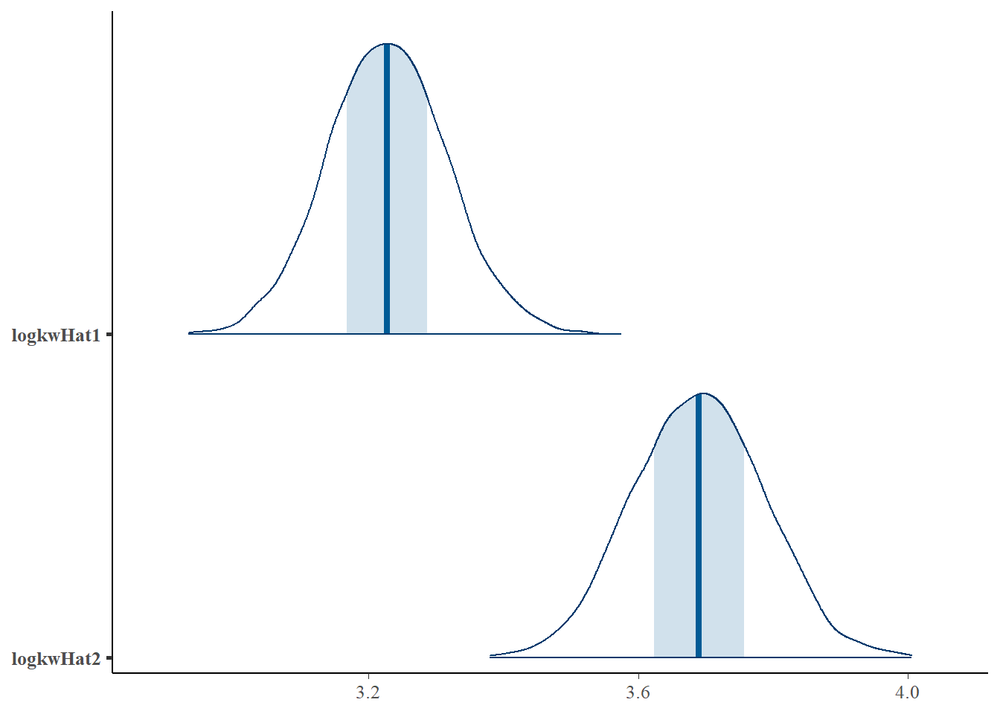
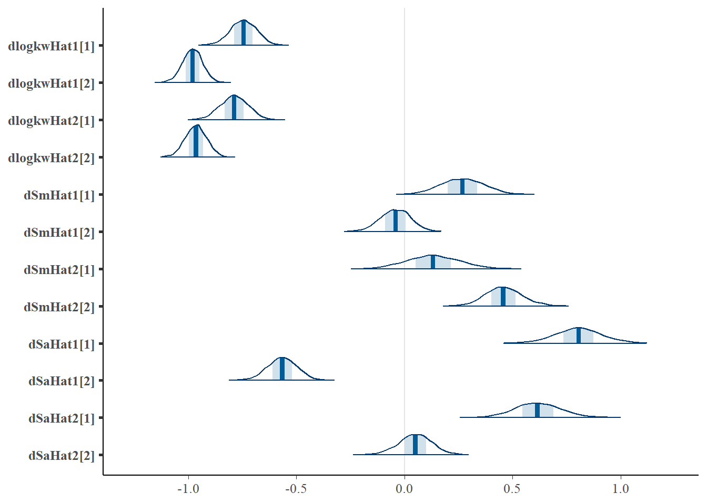
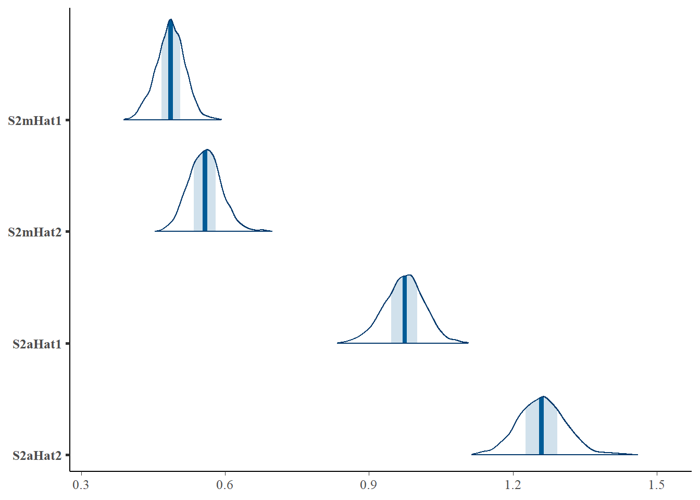
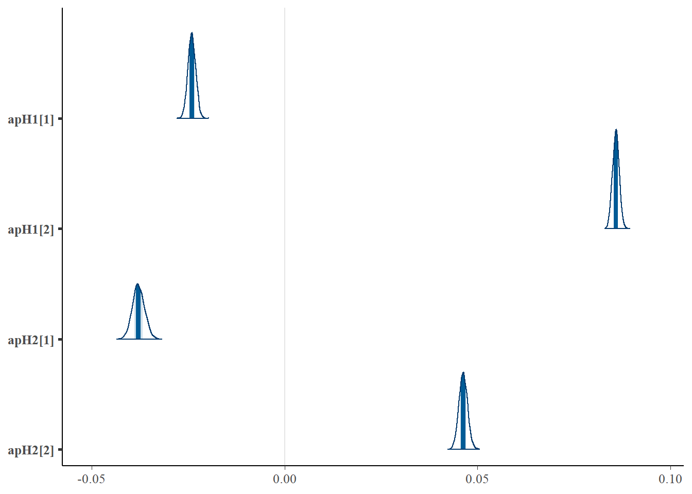
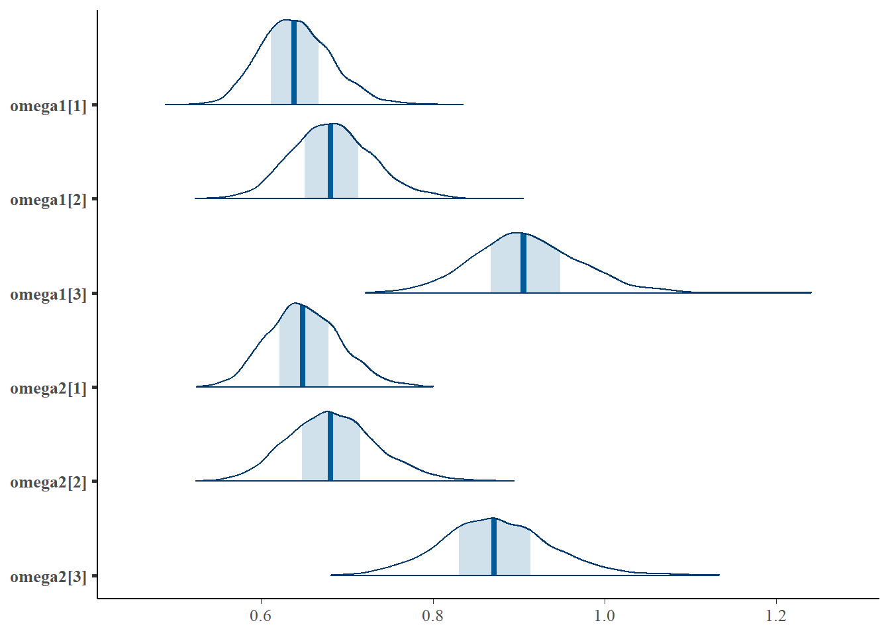
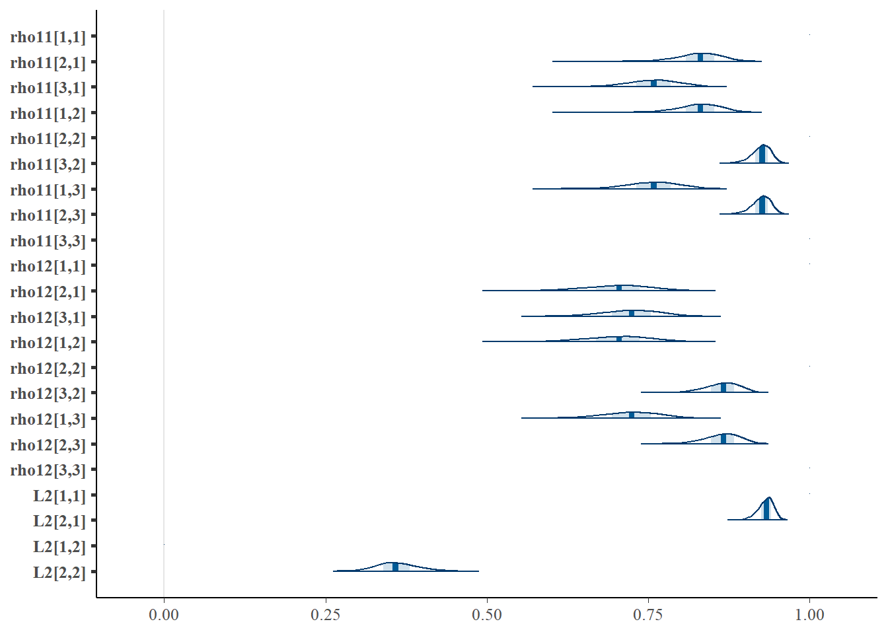

Warning: 4000 of 4000 (100.0%) transitions hit the maximum treedepth limit of 10.
See https://mc-stan.org/misc/warnings for details.Warning: 2 of 10 chains had an E-BFMI less than 0.2.
See https://mc-stan.org/misc/warnings for details.Warning: pojawiły się wartości NA na skutek przekształcenia
Warning: pojawiły się wartości NA na skutek przekształcenia variable mean median sd mad q5 q95 rhat ess_bulk ess_tail
logkwHat1 3.23 3.23 0.09 0.09 3.08 3.38 1.01 1301 2100
logkwHat2 3.69 3.69 0.10 0.10 3.53 3.85 1.01 946 2094
S1mHat1 4.42 4.42 0.10 0.10 4.26 4.57 1.01 1125 2006
S1mHat2 5.08 5.08 0.11 0.11 4.91 5.26 1.00 1078 2070
S1aHat1 5.41 5.41 0.13 0.13 5.19 5.63 1.01 968 2112
S1aHat2 5.90 5.90 0.13 0.13 5.69 6.12 1.00 911 2125
dlogkwHat1[1] -0.74 -0.74 0.06 0.06 -0.85 -0.65 1.01 684 1264
dlogkwHat1[2] -0.98 -0.98 0.05 0.05 -1.06 -0.90 1.01 771 1286
dlogkwHat2[1] -0.79 -0.79 0.06 0.06 -0.89 -0.68 1.02 571 941
dlogkwHat2[2] -0.96 -0.96 0.05 0.05 -1.05 -0.88 1.03 304 1016
dSmHat1[1] 0.27 0.27 0.10 0.10 0.11 0.43 1.06 152 572
dSmHat1[2] -0.04 -0.04 0.07 0.07 -0.16 0.07 1.04 254 408
dSmHat2[1] 0.13 0.13 0.12 0.12 -0.06 0.33 1.06 116 629
dSmHat2[2] 0.46 0.46 0.08 0.08 0.33 0.60 1.05 186 428
dSaHat1[1] 0.80 0.80 0.11 0.10 0.63 0.98 1.07 145 288
dSaHat1[2] -0.57 -0.57 0.07 0.07 -0.68 -0.46 1.04 184 333
dSaHat2[1] 0.62 0.61 0.11 0.11 0.44 0.80 1.06 115 214
dSaHat2[2] 0.05 0.05 0.08 0.08 -0.08 0.17 1.04 184 485
S2mHat1 0.49 0.49 0.03 0.03 0.43 0.53 1.07 109 260
S2mHat2 0.56 0.56 0.03 0.03 0.50 0.61 1.05 143 123
S2aHat1 0.97 0.97 0.04 0.04 0.90 1.04 1.08 94 187
S2aHat2 1.26 1.26 0.05 0.05 1.18 1.34 1.05 144 136
beta1[1] 0.77 0.77 0.03 0.03 0.72 0.82 1.00 1768 2601
beta1[2] 0.42 0.41 0.04 0.04 0.35 0.48 1.02 645 1785
beta1[3] 0.45 0.45 0.05 0.05 0.37 0.54 1.01 910 2049
beta2[1] 0.77 0.77 0.03 0.03 0.71 0.83 1.01 1108 2654
beta2[2] 0.37 0.37 0.04 0.04 0.30 0.45 1.02 536 1058
beta2[3] 0.42 0.42 0.05 0.05 0.33 0.51 1.01 664 1565
alphaAHat1[1] 2.00 2.00 0.17 0.17 1.72 2.27 1.00 1103 2061
alphaAHat1[2] 2.09 2.10 0.20 0.20 1.76 2.42 1.01 1816 2511
alphaAHat2[1] 1.98 1.98 0.17 0.17 1.70 2.26 1.01 1294 1841
alphaAHat2[2] 2.13 2.13 0.20 0.20 1.80 2.45 1.00 2209 2805
alphaBHat1[1] -1.04 -1.03 0.13 0.14 -1.26 -0.82 1.01 631 1431
alphaBHat1[2] -0.95 -0.95 0.17 0.18 -1.23 -0.66 1.01 1014 1778
alphaBHat2[1] -1.12 -1.12 0.14 0.14 -1.35 -0.90 1.02 678 1210
alphaBHat2[2] -1.12 -1.12 0.18 0.18 -1.40 -0.83 1.01 1107 1594
dlogkTHat1 -0.09 -0.09 0.00 0.00 -0.10 -0.09 1.00 5799 2679
dlogkTHat2 -0.11 -0.11 0.00 0.00 -0.11 -0.10 1.00 4567 2906
omegadlogkT1 0.03 0.03 0.00 0.00 0.03 0.04 1.00 4388 3145
omegadlogkT2 0.04 0.04 0.00 0.00 0.03 0.04 1.00 3365 2810
apH1[1] -0.02 -0.02 0.00 0.00 -0.03 -0.02 1.00 3317 3435
apH1[2] 0.09 0.09 0.00 0.00 0.08 0.09 1.00 2724 3656
apH2[1] -0.04 -0.04 0.00 0.00 -0.04 -0.04 1.00 2210 2815
apH2[2] 0.05 0.05 0.00 0.00 0.04 0.05 1.00 3556 3657
msigma1 0.36 0.36 0.03 0.03 0.32 0.41 1.00 7856 3276
msigma2 0.49 0.49 0.03 0.03 0.44 0.55 1.00 7213 2860
ssigma1 1.00 1.00 0.05 0.05 0.92 1.09 1.00 7756 2992
ssigma2 0.88 0.88 0.05 0.05 0.80 0.96 1.00 7736 3528
omega1[1] 0.64 0.64 0.04 0.04 0.58 0.71 1.00 1588 2354
omega1[2] 0.68 0.68 0.05 0.05 0.61 0.76 1.00 1270 2137
omega1[3] 0.91 0.91 0.06 0.06 0.81 1.01 1.00 1343 2106
omega2[1] 0.65 0.65 0.04 0.04 0.58 0.72 1.00 1949 2742
omega2[2] 0.68 0.68 0.05 0.05 0.60 0.77 1.01 1121 2120
omega2[3] 0.87 0.87 0.06 0.06 0.77 0.98 1.00 1310 1984
rho11[1,1] 1.00 1.00 0.00 0.00 1.00 1.00 NA NA NA
rho11[2,1] 0.83 0.83 0.03 0.03 0.77 0.88 1.02 738 1569
rho11[3,1] 0.76 0.76 0.04 0.04 0.69 0.82 1.01 958 1802
rho11[1,2] 0.83 0.83 0.03 0.03 0.77 0.88 1.02 738 1569
rho11[2,2] 1.00 1.00 0.00 0.00 1.00 1.00 NA NA NA
rho11[3,2] 0.93 0.93 0.02 0.01 0.90 0.95 1.00 1611 2630
rho11[1,3] 0.76 0.76 0.04 0.04 0.69 0.82 1.01 958 1802
rho11[2,3] 0.93 0.93 0.02 0.01 0.90 0.95 1.00 1611 2630
rho11[3,3] 1.00 1.00 0.00 0.00 1.00 1.00 NA NA NA
rho12[1,1] 1.00 1.00 0.00 0.00 1.00 1.00 NA NA NA
rho12[2,1] 0.70 0.71 0.05 0.05 0.62 0.78 1.01 795 1700
rho12[3,1] 0.72 0.72 0.04 0.04 0.65 0.79 1.01 1296 2293
rho12[1,2] 0.70 0.71 0.05 0.05 0.62 0.78 1.01 795 1700
rho12[2,2] 1.00 1.00 0.00 0.00 1.00 1.00 NA NA NA
rho12[3,2] 0.86 0.87 0.03 0.03 0.82 0.90 1.01 1244 2171
rho12[1,3] 0.72 0.72 0.04 0.04 0.65 0.79 1.01 1296 2293
rho12[2,3] 0.86 0.87 0.03 0.03 0.82 0.90 1.01 1244 2171
rho12[3,3] 1.00 1.00 0.00 0.00 1.00 1.00 NA NA NA
L2[1,1] 1.00 1.00 0.00 0.00 1.00 1.00 NA NA NA
L2[2,1] 0.93 0.93 0.01 0.01 0.91 0.95 1.02 796 1249
L2[1,2] 0.00 0.00 0.00 0.00 0.00 0.00 NA NA NA
L2[2,2] 0.36 0.36 0.03 0.03 0.31 0.41 1.02 796 1249
kappa1[1] 0.54 0.53 0.03 0.03 0.49 0.59 1.04 335 916
kappa1[2] 0.51 0.51 0.04 0.04 0.45 0.58 1.05 228 195
kappa1[3] 0.50 0.50 0.04 0.04 0.44 0.57 1.04 232 593
kappa2[1] 0.55 0.55 0.03 0.03 0.50 0.60 1.01 429 935
kappa2[2] 0.58 0.58 0.05 0.05 0.50 0.67 1.04 179 195
kappa2[3] 0.50 0.50 0.05 0.05 0.43 0.59 1.06 150 361
tau[1] 2.36 2.35 0.14 0.14 2.14 2.59 1.10 80 717
tau[2] 3.13 3.12 0.17 0.17 2.86 3.42 1.04 443 983





